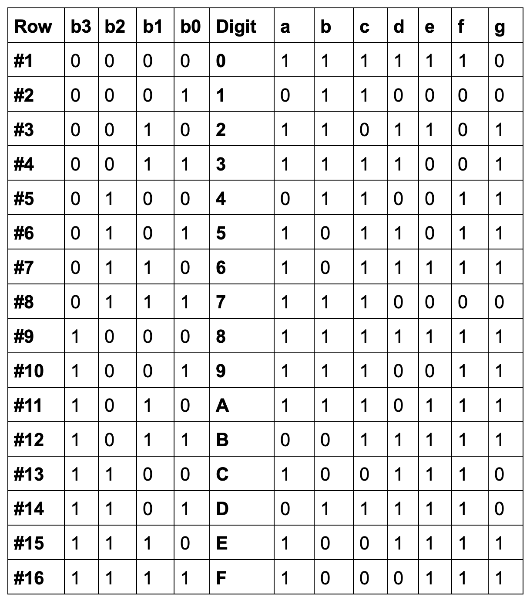

Visual represenatation of the 16 digits which will be displayed by the 7 segment LED.

Assume the 4 inputs are labelled as a, b, c, and d. The output represents the digit which will be displayed on the 7 Segment LED.
The canonical representation shown above does not shed full light on the outputs. The representation above merely presents 4 inputs which turn into a basic digit output, but to make this digit appear on the LED there are 7 different outputs which actually must be made true or false. We can treat each segment on the 7 segment LED as one of these outputs (this can be seen in the image below where each letter is one output). Let's say our 4 inputs are (a not), (b not, )c, and d, or 0011. This means the digit that must be displayed on the LED screen is the number 3. To make this number 3 appear, the outputs (which can be referenced below) a, b, g, c, and d must be true so the number 3 is visible on the LED. Let's look at another example. Take the inputs a, b, (c not), and d, or 1101. These inputs according to the canonical representation must give the output of the letter D. To make this happen, the input of 1101 must make the outputs b, g, e, d, and c true so they light up and display the letter. This same principle applies for every digit, and this can be logically reasoned through via the canonical representation above and the reference image of the 7 outputs below.

I do want to note that I was unable to create a comprehensive Falstad circuit of this though due to my incompetence and a major problem I had. My main problem was that I was unable to add in logic gates with more than 3 inputs on the site which are most likely required for something as complex as this due to the sheer amount of inputs and outputs. However, even if I did know how to add these in, I do not know how gates such as a OR or an AND gate function with more than 2 inputs as I have only learned how to get the outputs from them with 2 inputs. Therefore, this would have led me to confuusion about which gates I would have used for which situation.
With this said, I do understand the end goal of what was supposed to happen with this activity, and I hope I am able to recieve assitance on what I can do to fix the problems I encountered and eventually create a logic gate sequence for a 7 segment LED.